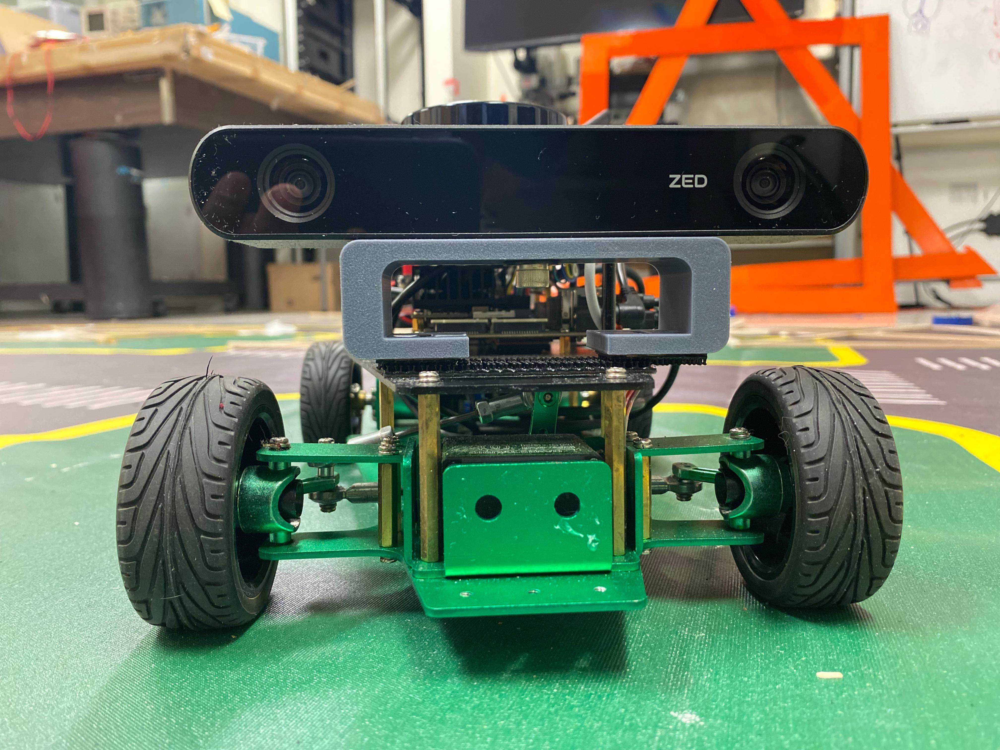
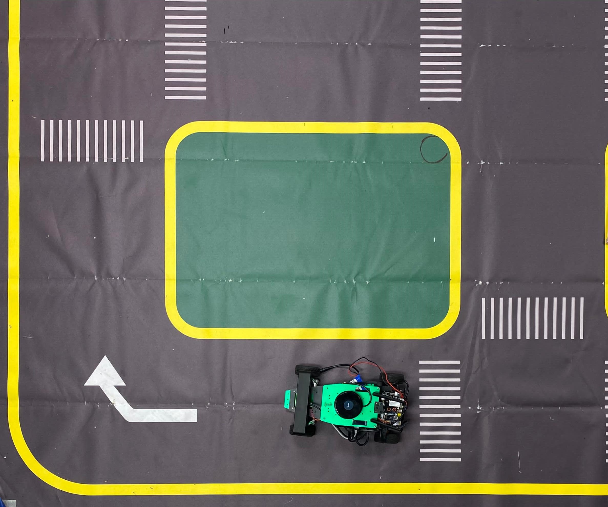

Skills: Pytorch, Matplotlib, NumPy
AUTONOMOUS NAVIGATION: DAEPTH BASED PERCEPTION
Aim of the Project
In autonomous driving, perception systems are pivotal as they interpret sensory data to understand the envi ronment, which is essential for decision-making and planning. Ensuring the safety of these perception systems is fundamental for achieving high-level autonomy, allowing us to confidently delegate driving and monitoring tasks to machines. This project focuses on enhancing the understanding and navigation capabil ities of self-driving robots through sensor fusion and computervision techniques. Specifically, it explores the depth based perception using ZED2 camera to improve autonomous driving perception.

Background
Checkout the Github Profile to look for more detailed report -
In this project, we utilized depth-based perception to en able autonomous navigation of the robot in an unfamiliar environment. The fusion of 2D LiDAR and depth camera sensors demanded substantial computational resources, leading to system throttle errors during the object detection task alone. In addition to object detection, we also maneuvered the Rosmaster R2 bot autonomously, detecting traffic signs such as 'Move', 'Turn', and 'Stop'. Depth cameras and traditional cameras play critical roles in mobile robot perception, pro viding 3D environmental information and facilitating vision guided navigation, respectively. Fig1 shows such example of the camera that we have used in this project.
Hardware and Software Setup

The project utilized a combination of advanced hardware and software to process and analyze sensor data: * Jetson Xavier Processor: Served as the computational backbone, handling data processing and model execution. * ZED2 RGBD Camera:Provided high-resolution images and depth data, crucial for object detection and distance estimation. Fig 2 shows such example of the camera that we have used in this project. * ROS (Robot Operating System): Enabled efficient sys tem integration, data handling, and algorithm implemen tation. * ZED SDK: Offered tools and APIs for extracting and processing data from the ZED 2 camera. The integration of these hardware components through ROS facilitated a modular approach, allowing for the independent development and testing of subsystems. Below figure shows the implemented environment we have used through this project.

Challenges and Solution
The project faced significant challenges in terms of computational power. The computational capacity of the Jetson Xavier was limited, which posed a significant hurdle. The team was unable to implement 2D LiDAR fusion and the ZED 2 camera as initially planned due to these constraints.
Working
In this project, we embarked on a
journey to develop an autonomous navigation system, starting with
the fundamental task of detecting lanes. We utilized the YOLOv5 pre-trained
model for object detection. This model has been widely used
in various applications, including lane detection, missing road
lane markings detection, and pedestrian detection. The use of
YOLOv5 allowed us to effectively detect objects in real-time,
contributing significantly to the success of the project. Here we
have detected successfully the 'Stop', 'Move', and 'Turn' signs
using which robot will perform the task according to the signs.